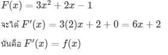
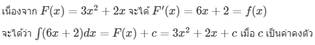
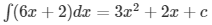
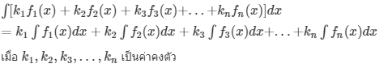
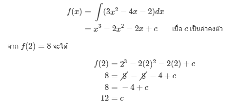
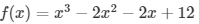
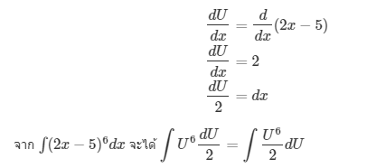
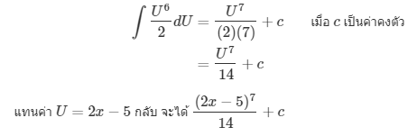
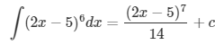

บทนิยาม : ฟังก์ชัน F เป็นปฏิยานุพันธ์ (antiderivative) หนึ่งของ f ถ้า F′(x)=f(x) สำหรับทุกค่าของ x ที่อยู่ในโดเมนของ f
ตัวอย่าง การตรวจสอบปฏิยานุพันธ์
กำหนดให้ f(x) = 2x จงตรวจสอบว่า F1(x) = x^2+3 และ F2(x) = x^2 − 1 เป็นปฏิยานุพันธ์ของ f(x) หรือไม่
วิธีทำ

ตอบ ทั้ง F1(x) และ F2(x) เป็นปฏิยานุพันธ์ของ f(x)
จะเห็นว่า ปฏิยานุพันธ์ของฟังก์ชันมีได้หลายแบบ ซึ่งแต่ละแบบจะแตกต่างกันเพียงค่าคงตัวเท่านั้น
สรุปได้ว่า
ถ้า F เป็นปฏิยานุพันธ์หนึ่งของ f แล้ว ฟังก์ชัน G ที่นิยามโดย G(x)=F(x)+c เมื่อ c เป็นค่าคงตัว จะเป็นปฏิยานุพันธ์ของ f ด้วย
ปฏิยานุพันธ์ของฟังก์ชัน f เขียนแทนด้วยสัญลักษณ์ ∫f(x)dx อ่านว่า ปริพันธ์ไม่จำกัดเขต (indefinite integral) ของฟังก์ชัน f เทียบกับตัวแปร x ดังนั้น
ถ้า F′(x)=f(x) แล้ว จะได้ว่า ∫f(x)dx=F(x)+c เมื่อ c เป็นค่าคงตัว
จากบทนิยาม
เรียกกระบวนการ ∫f(x)dx ว่า การหาปริพันธ์ (integration)
เรียกเครื่องหมาย ∫ ว่า เครื่องหมายปริพันธ์ (integral)
เรียก f(x) ว่า ตัวถูกปริพันธ์ (integrand)
เรียก dx ว่า ผลต่างเชิงอนุพันธ์ (differential)
ตัวอย่าง การหาปริพันธ์ไม่จำกัดเขต
จงหาปริพันธ์ไม่จำกัดเขตของ f(x)=6x+2
วิธีทำ

ตอบเมื่อ c เป็นค่าคงตัว
สูตรที่ 1 ∫kdx=kx+c เมื่อ k และ c เป็นค่าคงตัว
สูตรที่ 2 ∫xndx=xn+1n+1+c เมื่อ c เป็นค่าคงตัว และ n≠−1
สูตรที่ 3 ∫kf(x)dx=k∫f(x)dx เมื่อ k เป็นค่าคงตัว และ f(x) มีปริพันธ์
สูตรที่ 4 ∫[f(x)±g(x)]dx=∫f(x)dx±∫g(x)dx เมื่อ f(x) และ g(x) มีปริพันธ์
จากสูตรที่ 3 และ 4 จะได้ว่า

ในการหาปริพันธ์ไม่จำกัดเขตของฟังก์ชัน จะเห็นว่าคำตอบที่ได้มี c ซึ่งเป็นค่าคงตัวใดๆ ด้วยเสมอ เราไม่อาจทราบได้ว่า c จะมีค่าเท่าใด นอกเสียจากโจทย์ได้มีการกำหนดเงื่อนไขบางอย่างของฟังก์ชันมาให้ ดังตัวอย่างต่อไปนี้
ตัวอย่าง การหาค่าคงตัวจากการหาปริพันธ์ไม่จำกัดเขต
กำหนดให้ f′(x)=3x^2−4x−2 และ f(2)=8 จงหา f(x)
วิธีทำ

ตอบ ดังนั้น 
ในการหาปริพันธ์ไม่จำกัดเขตของฟังก์ชันที่อยู่ในรูป Un เมื่อ U=f(x) และ n≠−1 เช่น
∫(2x−5)6dx
เราไม่สามารถใช้สูตรการหาปริพันธ์โดยตรงได้ การหาปริพันธ์ของฟังก์ชันรูปแบบนี้ต้องใช้เทคนิคการเปลี่ยน dx เป็น dU ดังตัวอย่างต่อไปนี้
ตัวอย่าง การหาปริพันธ์ไม่จำกัดเขตของฟังก์ชันในรูป Un
จงหา ∫(2x−5)6dx
วิธีทำ ให้ U=2x−5U=2x−5 จะได้

เราจะสามารถหาปริพันธ์ได้โดยใช้สูตรการหาปริพันธ์พื้นฐาน ดังนี้

ตอบ  เมื่อ c เป็นค่าคงตัว